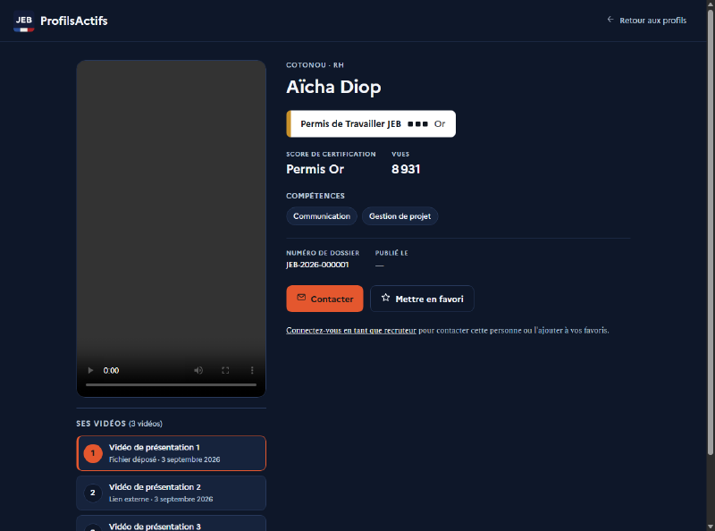

ProfilsActifs Since Sept. 2026 · ongoing
A platform that replaces the classic CV with a short video introduction and a certification badge (Bronze, Silver, Gold) earned through a skills questionnaire. Three spaces: candidate, recruiter, admin. The frontend is fully static — HTML, CSS and vanilla JS, no dependencies — wired to a Node/Express and Prisma/MySQL API that is still being built.
Dependency-free HTML/CSS/JS · Node.js · Express · Prisma · MySQL · JWT
On the same day, four people from the client's office sent us contradictory instructions on video hosting, moderation and accessibility. Rather than guess which one to follow, we wrote them a note asking for one shared decision.
